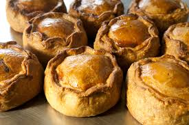
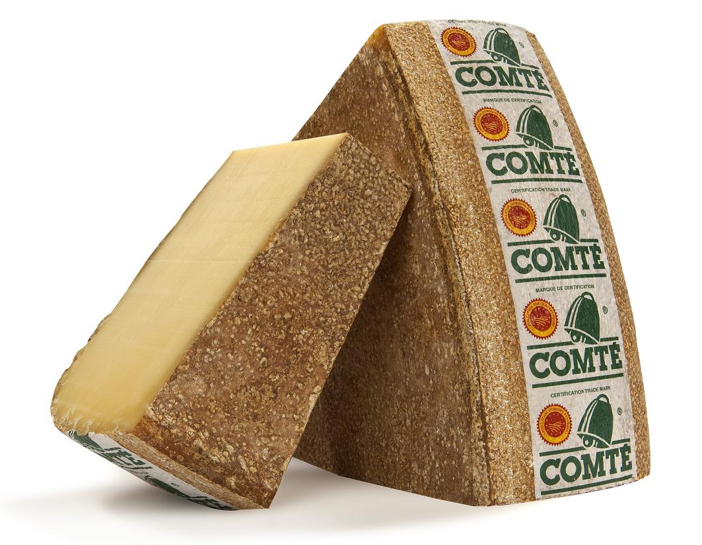
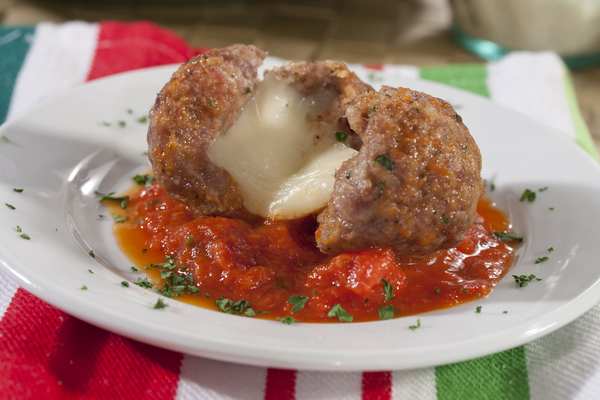

AOC stands for the appellation d'origine contrôlée, or controlled designation of origin. It's the French certification granted to certain French geographical indications for wines, cheeses, butters, and other agricultural products. Many other countries also use this mark to denote food that was produced in a specific region. You can only sell food using certain terms if they were produced in the region. For example Melton Mowbray pork pies can only be sold as such if they made in the town of Melton Mowbray. Here's a list of some more foods like this:
Chorizo de Bellota
Parmeggiano Reggiano
Melton Mowbray pork pie

Comte

Olive Oil
Here is a man explaining what AOC means for wine. It's super interesting, miss it at your peril!
BUT the best AOC in the world is....
But wait, there's more.What if there was something that combined AOC meat, cheese and wine in to one glorious foodstuff? Well it does, it's a cheese stuffed meatball in tomato and red wine sauce!!

Finally, AOC productions bring you a landmark piece of animated cinema. Watch what critics are calling 'badly animated', Untitled 2: